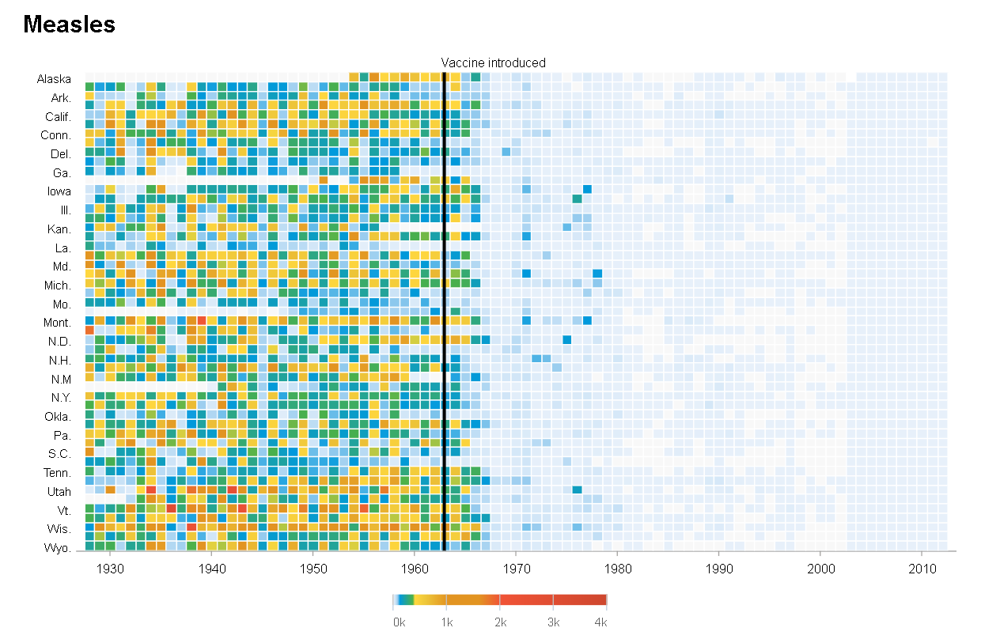
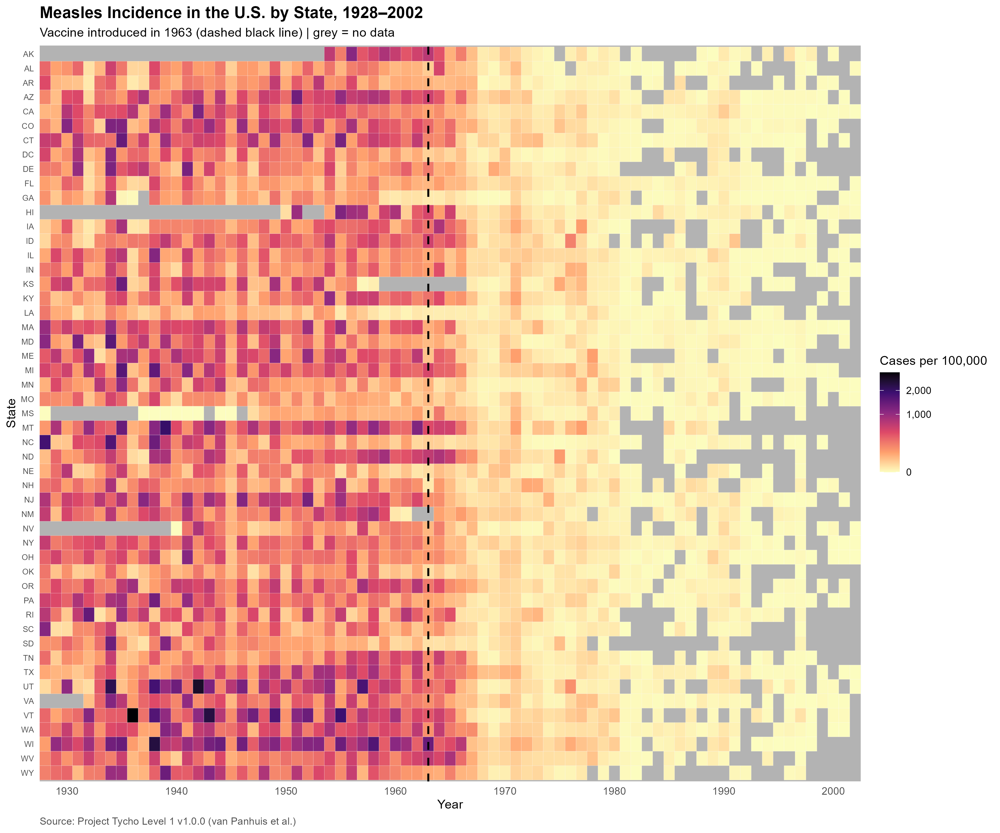

About this exercise
The exercise asked to take the Module 5 plot and improve its accessibility and Evergreen checklist criteria. The two fixes chosen for this exercise are updating the palette to magma with a grey missing-data background (accessibility fix) and adding comma labels to the legend along with a formal caption (Evergreen fix).
Visualisation Redesign
Master Visualisation

Original visualisation (DeBold & Friedman, 2015).
Before Redesign

Figure 1 (Before): Initial heatmap visualization created using the wrongly built annual file, displaying raw case counts and full state names prior to rate normalization (adapted from DeBold & Friedman, 2015).
After Redesign

Figure 2 (After): Redesigned heatmap displaying incidence rates per 100,000 population using the magma colour scale, grey missing-data tiles, state abbreviations, and explicit Tycho source attribution (adapted from DeBold & Friedman, 2015).
What I changed and why
I rebuilt the annual data directly from the raw Tycho Level 1 file because the old pre-aggregated file showed impossible case peaks in the wrong years. I checked the rebuilt numbers and confirmed that 1950 had 301,379 total cases while 1975 dropped to 23,845 cases after the vaccine took effect. The data ends in 2002, whereas the WSJ original goes up to 2010.
- Metric Choice (Rate per 100,000): I used incidence rate per 100,000 population instead of raw cases so large states do not look worse than smaller states just because they have more people.
- Magma Palette: I switched to the magma palette so lower and medium rates stand out better while staying colour-blind friendly.
- Grey for Missing Data (
na.value = "grey70"): I set missing values to grey because grey means no data reported, which could be zero cases or simply no reporting from that state.
- Black Reference Line: I changed the 1963 vaccine line to black so it is easy to see against the dark red background cells.
- Legend Commas & State Abbreviations: I added commas to the legend numbers using
label_comma() and shortened state names to 2-letter codes so the y-axis is cleaner.
- Caption Citation: I added the Tycho dataset citation to the bottom caption so the data source is clear.
Data Card
| Field |
Description |
| Title |
U.S. Measles Incidence Heatmap (1928–2002) |
| Summary |
Annual heatmap visualising U.S. state-level measles incidence rates per 100,000 population from 1928 to 2002 using the magma colour palette, with a vertical dashed line indicating vaccine introduction in 1963. |
| Data Sources |
van Panhuis, W. G., Willem, L., & Cross, A. (2018). Project Tycho Level 1 data: Counts of multiple diseases reported in UNITED STATES OF AMERICA, 1916-2011 (Version 1.0.0) [Data set]. Zenodo. https://doi.org/10.5281/zenodo.12608992 |
| Mapping |
Variables mapped: Year (derived from epi_week %/% 100 on x-axis), state (2-letter postal abbreviation on y-axis), and incidence_per_100000 (summed weekly rates represented by tile fill colour). |
| Important Notes |
1. Uses rate per 100,000 to avoid population size bias across states.
2. Grey tiles explicitly mean no data reported, which could be zero cases or missing reporting.
3. This dataset ends in 2002, while the original WSJ chart covers years through 2010. |
| Access |
https://zenodo.org/records/12608992 |
AI Acknowledgement
An AI assistant (Claude by Anthropic) was used throughout this exercise to debug R code syntax, review HTML formatting, and point out data accuracy issues, missing value handling, rate adjustments, and colour-blind palette choices. I reviewed the suggestions, ran and saved the code in RStudio, and wrote the final responses.